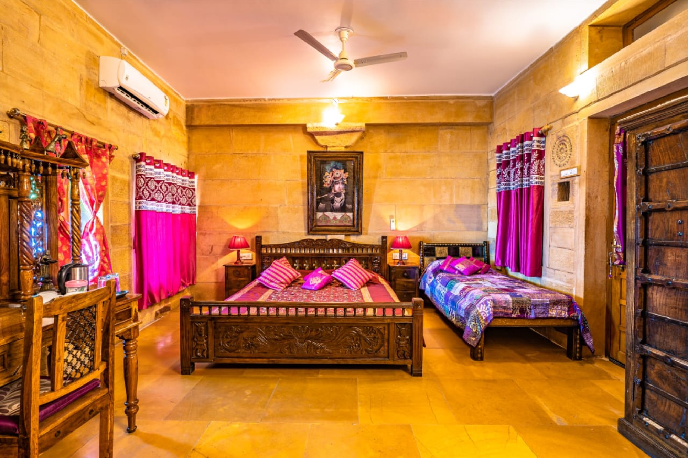
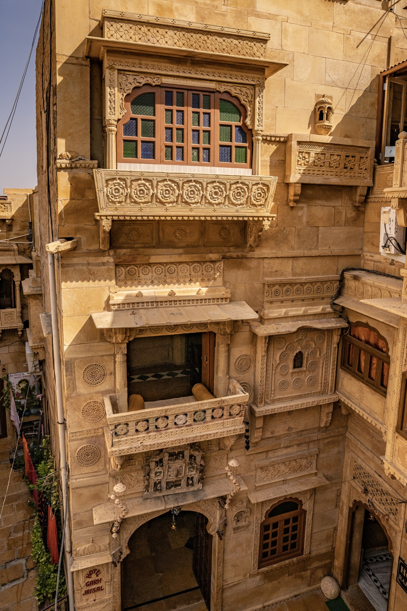
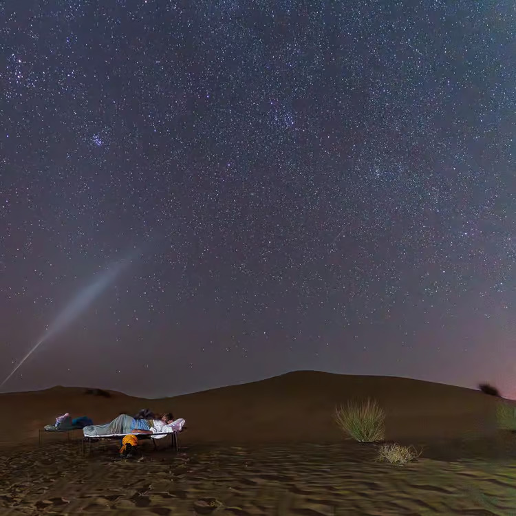
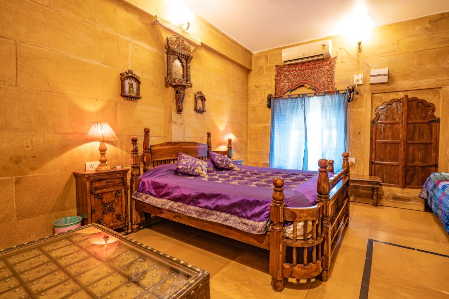
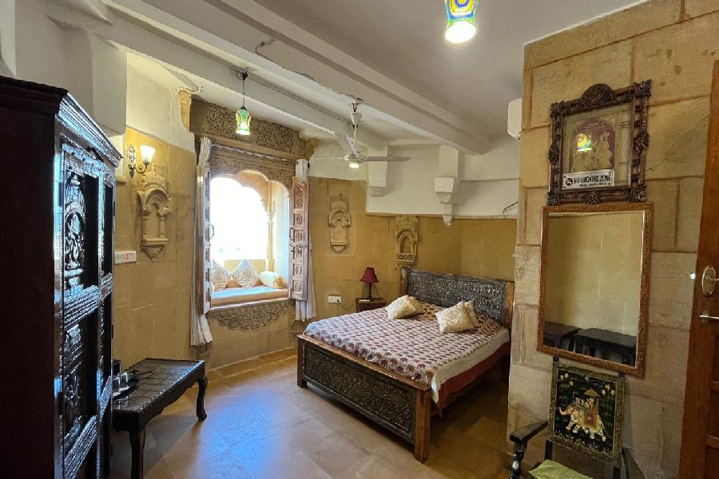
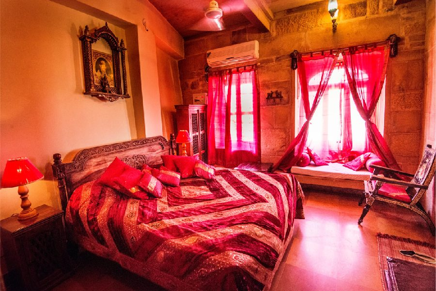
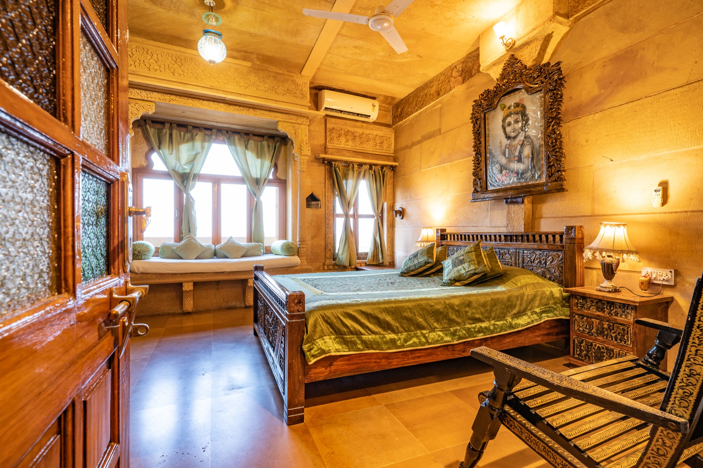
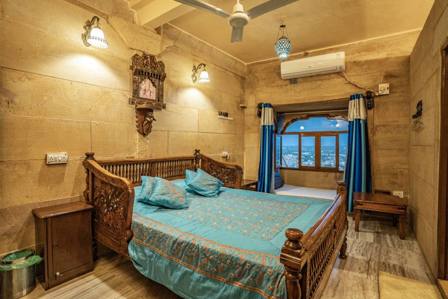
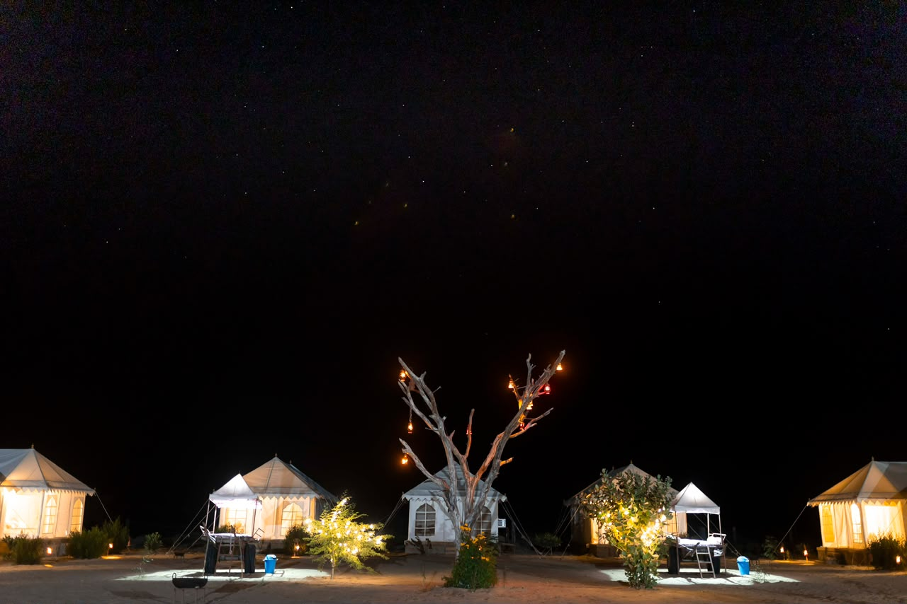

Ground floor · Source-listed room
Sweet Purple Room
The source room record describes a colourful heritage room with a carved bed, a second bed and a city view.
View room details →
A look around
These locally hosted photographs show sandstone interiors, several room details, a candlelit rooftop table, camel scenes and an open-sky desert scene. They introduce the setting; they do not confirm a room assignment, current tour availability or package inclusions.
A MORE THOUGHTFUL STAY
Move from room research to experiences, dining and arrival planning in a few clear steps.
Inside and beyond the fort
The images below come from the property’s existing photo collection and are served locally from this repository. Captions describe what is visible and do not promise that a particular room, menu, arrangement or excursion is available on your dates.

Above the city
The pictured terrace looks out over Jaisalmer’s rooftops. Ask for the current menu, service hours, prices and table availability before planning a meal.
Plan a dining enquiry →
Sandstone details
A view of the sandstone interior and carved architectural details. Read the story page for context, then review arrival guidance before travelling into the fort.
Read our story → Plan arrival →
Beyond the city
The image shows an open-sky sleeping setup in the desert. Ask which overnight options are currently offered and confirm the route, timing and inclusions for the chosen package.
Explore experience options →
Evening setting
A candlelit table from the existing property photo collection. Ask whether a similar arrangement is available for your date; menu, prices and service hours require confirmation.
Plan a dining enquiry →
Sunset desert scene
Ask whether a sunset camel outing is currently offered, then confirm route, timing, transport and inclusions for your date.
Explore experience options →
Desert landscape
This image shows camels with handlers in daylight. Ask which route and format is currently available; the photograph does not confirm a live itinerary.
Review experience guidance →
Stonework and stories
The planned Fort walk focuses on Jain temples, the Palace Museum and a heritage street walk. Confirm route, access and guide language for your date.
Explore guided walks →Planning note: Current rates, room availability, restaurant hours, tour inclusions and arrival assistance must be confirmed for your date. Contact and booking actions remain inactive until the owner verifies the public channels.
Seven named heritage rooms
These room photographs are mapped to the named rooms in the legacy room catalogue. They help you compare the character of each room; they are not a live room inventory. Confirm the exact room offered, current amenities, occupancy, rate and availability for your dates.

Ground floor · Source-listed room
The source room record describes a colourful heritage room with a carved bed, a second bed and a city view.
View room details →
Ground floor · Source-listed room
The source record describes a ground-floor room with a window seat and a view towards the morning light.
View room details →
Ground floor · Source-listed room
The legacy description notes warm colour, a city view and a window seat. Confirm the exact layout and facilities for your dates.
View room details →
First floor · Source-listed room
The source catalogue describes a first-floor heritage room with traditional character and views across Jaisalmer.
View room details →
First floor · Source-listed room
The source description calls out a red-toned room, a king bed and a window seat.
View room details →
First floor · Source-listed room
The source record describes green bedding, a window seat and a view over Jaisalmer.
View room details →
First floor · Source-listed room
The legacy description notes a city view and window seat. Confirm the room layout and current facilities before booking.
View room details →Continue planning
Use the practical pages to compare options and understand what needs confirmation before you travel.
Confirm the exact room, bed arrangement, inclusions and total rate for your dates.
Room guidance →Ask about routes, languages, timing and package details for your preferred date.
Experience guidance →From Fort Parking, allow about 300 metres (around 5–6 minutes on foot); from the fort entrance, about 200 metres (around 3–4 minutes). These are approximate estimates, and busy lanes can take longer. Confirm the meeting point and current access before travelling.
Arrival guidance →More from the source collection
These additional images are mapped from the source repository after visual inspection. They show the fort-side rooftop view and desert-camp scenes; they do not promise a particular tour, tent or programme on your dates.

Fort-side view
A locally hosted source photograph showing a sandstone terrace and the illuminated fort-side skyline. Use the arrival guide for practical access details.
Plan the visit →
Desert camp
The source photograph shows the layout of a desert camp at night. Confirm the camp, accommodation type, facilities and route before choosing an overnight option.
Compare desert options →
Overnight reference
A legacy desert-camp image for visual context only. Current tent availability, facilities, cultural programme, meals and timing must be reconfirmed for your date.
Ask about overnight stays →Bring the details together
Planning a room, an experience, a rooftop meal or your arrival? Select the topics that matter and prepare one enquiry draft to review, edit and deliberately share. Nothing is sent or stored by this page.